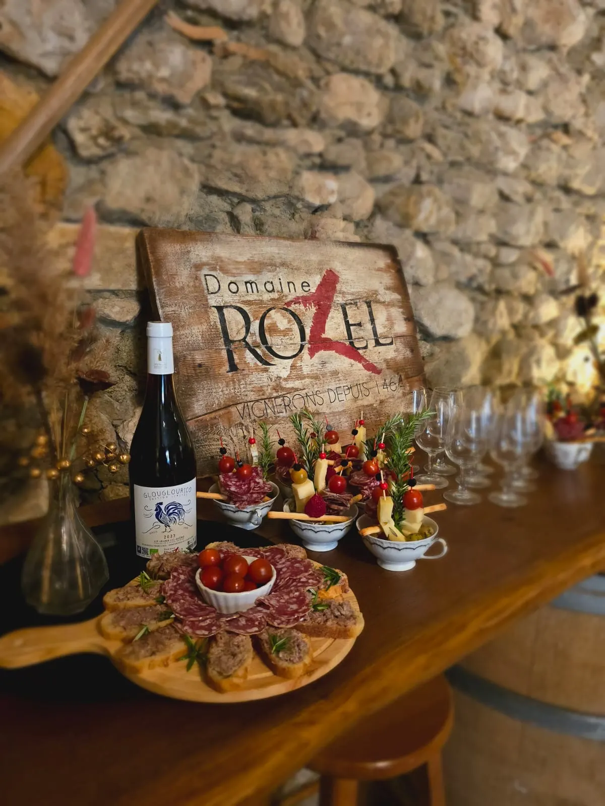
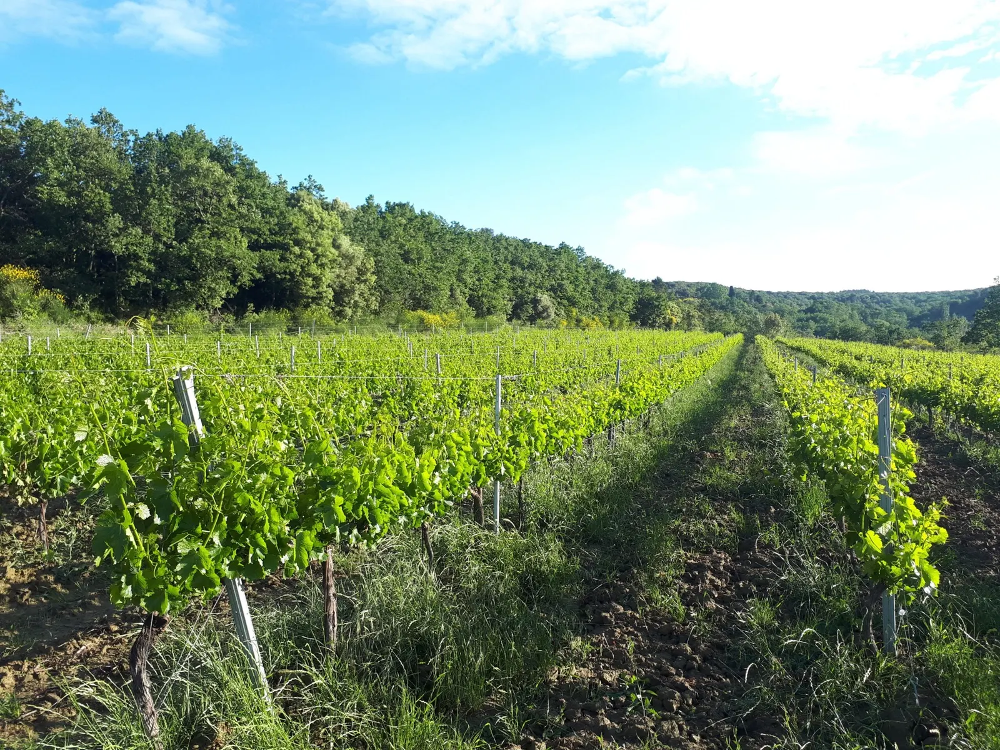
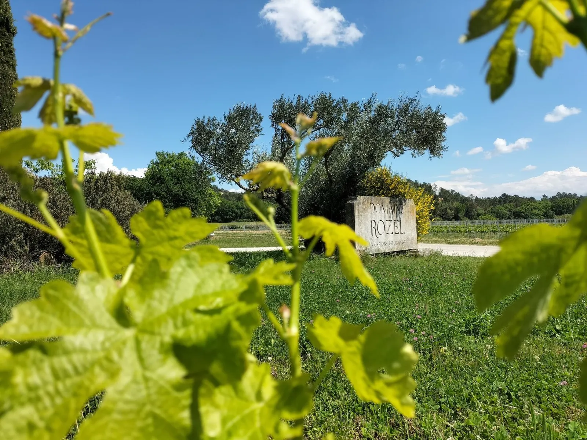
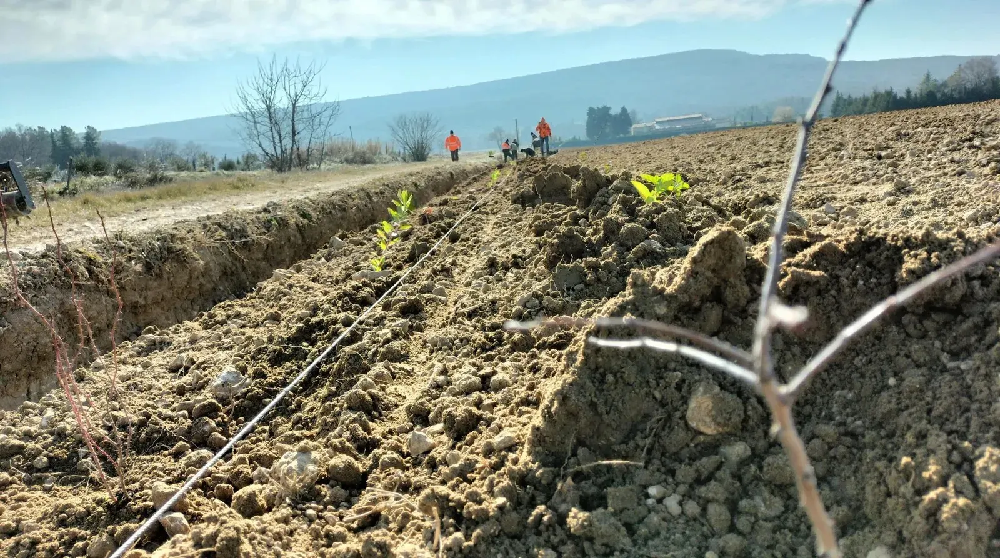
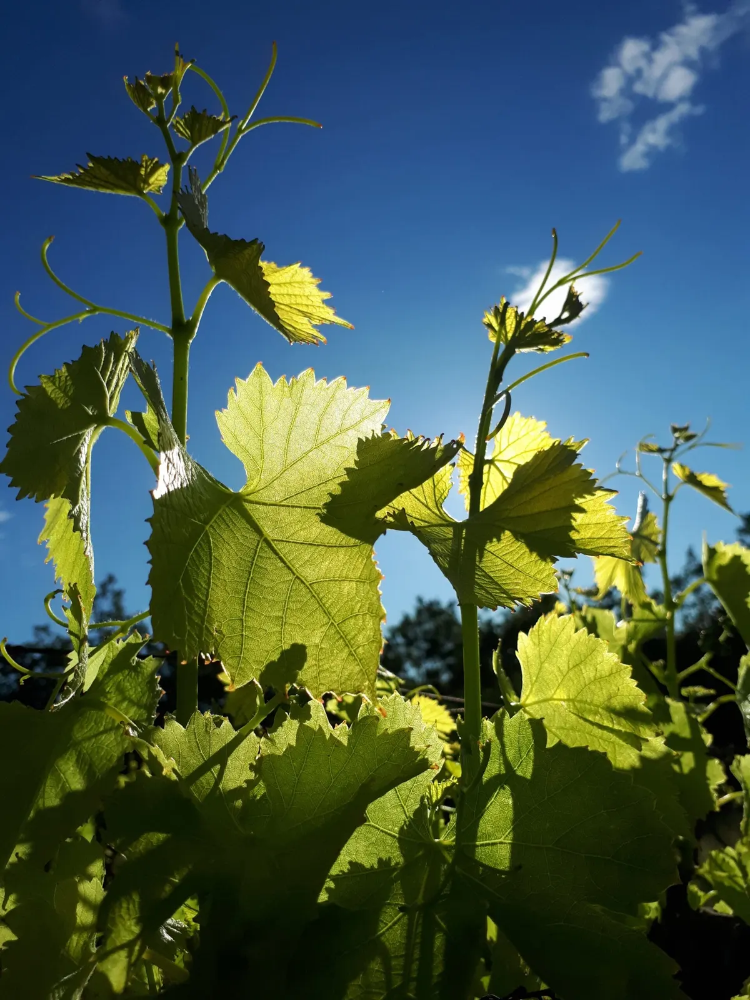
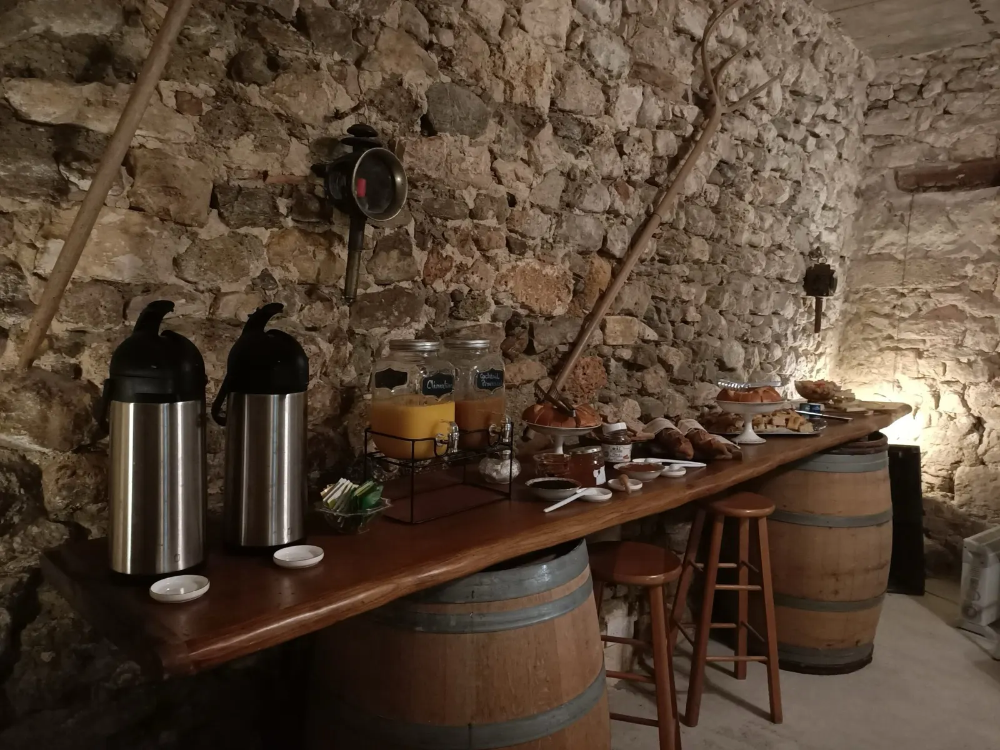
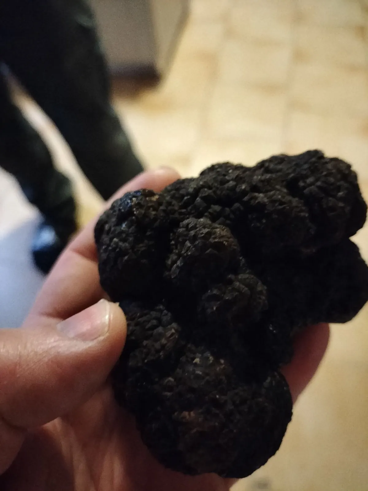
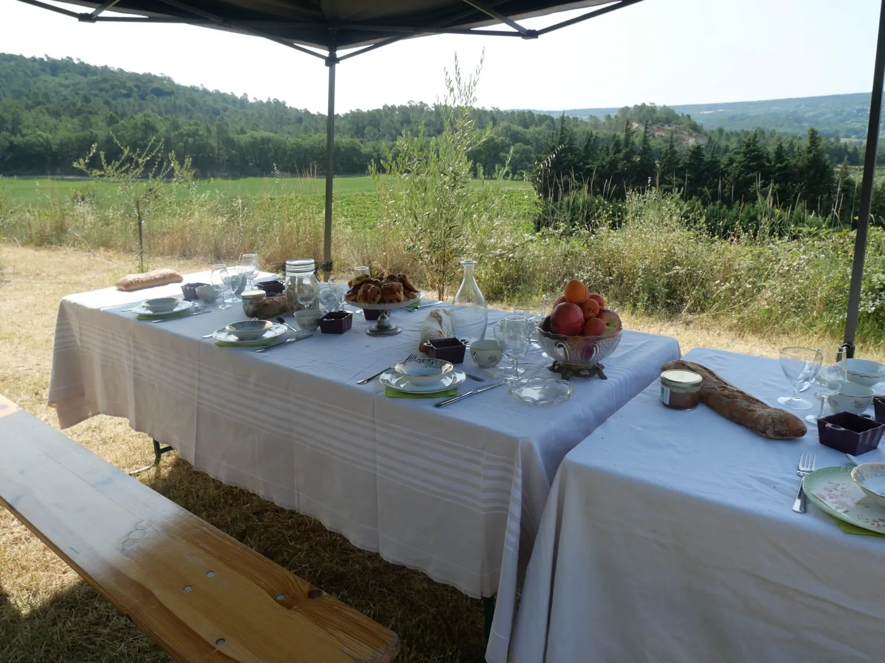

La bouteille du mois
L'Inattendu
Un pétillant naturel blanc de noir, issu de cinsault : une fraîcheur vive, des bulles délicates, de la légèreté en bouche.
14,90 €
Voir L'InattenduVingt-deux générations après Alayx Rozel, la famille cultive ses vignes en AOP Grignan-les-Adhémar, au pied du village de Valaurie. Tous les millésimes sont certifiés bio depuis 2023, et le caveau vous accueille tous les jours.

Les vignes du domaine, à ValaurieChaque génération a, selon sa sensibilité et les pratiques de son temps, apporté son savoir-faire pour construire l'excellence et la notoriété du domaine.

Sous le règne de Louis XI, le seigneur François de Poitiers donne à Alayx Rozel, premier magistrat de la commune d'Allan, le droit de défricher, de planter de la vigne et de vinifier.
Romain Rozel épouse Marie-Louise, fille de Joseph Lafond, et reprend les vignes de son beau-père à Valaurie. Le cœur du domaine est toujours fait de ces parcelles.
Ils cultivent les vignes de Valaurie et des communes alentour : Roussas, Clansayes, Chantemerle-lès-Grignan.
Une première haie est plantée autour des parcelles de vigne, mêlant arbres et arbustes pour recréer ce que la nature fait dans les forêts.

Marion Rozel rejoint le domaine pour la communication et les événements.
Depuis 2023, tous les millésimes du domaine sont certifiés bio.
Le domaine est niché au cœur de l'AOP Grignan-les-Adhémar, sur la rive gauche du Rhône, au sud de Montélimar.
Les vignes s'étendent sur Valaurie, Chantemerle-lès-Grignan, Clansayes et Roussas, entre champs de lavande, chênes truffiers, céréales et prairies de luzerne. La famille travaille la terre depuis des siècles et se dit paysanne, pas exploitante agricole.
Syrah, viognier, marsanne, roussanne
Grenache blanc et noir, cinsault
En avril et en mai, les asperges blanches du domaine se vendent directement sur place.

Prenez place au caveau, ou partez dans les vignes. Les activités se réservent sur la page œnotourisme du domaine et peuvent s'offrir en carte cadeau.


La salle voûtée du domaineRouges, blancs, rosés et oranges, à goûter au caveau ou à commander sur la cave en ligne du domaine.

Un pétillant naturel blanc de noir, issu de cinsault : une fraîcheur vive, des bulles délicates, de la légèreté en bouche.
14,90 €
Voir L'InattenduPrécommandez vos vins en ligne et récupérez-les directement sur le salon.
Salon des Vins des Vignerons Indépendants, stand B23
Précommander pour ReimsSalon des Vins Bios
Salon des vins
Précommander pour ChâtillonToutes les dates du domaine : événements et salons
